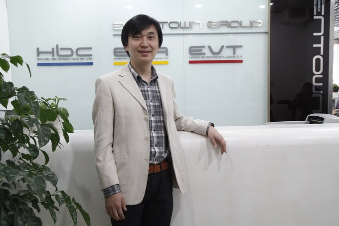

36氪专访会唐网创始人唐亮：万亿级的会议活动市场，其实并不好做
- 
会唐网是国内最大的会议场地搜索、预定平台之一，不久前刚刚完成首轮千万级融资。随着国外知名会议管理服务商 Cvent 上市，相关概念也得到国内创业者和投资人的关注。会议活动 O2O 对我们来说是个有些陌生的行业，抱着学习的心态，我们对会唐网及会唐集团创始人唐亮进行了一次专访。
唐亮创业前曾是搜狐畅游首席新闻官，04 年进入线下会展服务领域，07 年推出会唐网重归线上。目前他给自己事业的定位是会场搜索的“百度”+ 场地预定的“携程”。
一、会唐进入会议服务行业已经9年了，现金流应该比较健康，为什么选择这个时间点融资？
对此唐亮透露了两点原因：
一方面，垂直互联网的概念直到近几年才被资本市场看好。唐亮等人刚刚创业时，许多人表示对他的公司看不明白：如果说是一家互联网公司，早年会唐做的基本都是线下的事；如果说是一家传统公司，会唐自己又不承认。当时在资本眼中认为互联网公司就是要做纯线上，唐亮感到没法坐等资本市场认可，于是给了自己两个目标：一是要活下来盈利，二是要做互联网。至于后来的故事我们也想象得到，“被逼”盈利后，对资金也就不那么渴求了。
另一方面，会唐此次融资主要为了完善与会议活动管理相关的全线互联网产品。今年 10 月，会唐与会议管理软件提供商“会鸽”达成合作，产品线上已经基本与 Cvent 相同，所提供的会议活动管理工具集已经比较完整。基本框架搭好了，下一步就考虑如何去加速发展。
二、当年创业时为什么会选择会议服务领域？如何评估这个行业的机遇和挑战的？
提起当初创业时的选择，唐亮出人意料地给出了“年龄”这个因素。王兴生于 79 年，李想生于 81 年，而唐亮本人则跟王兴同年。当时看来，留给他们这一波人的创业机会“不太多”（只是相对而言），所以这些人做的事都比较垂直。
选择会议服务，一方面当然与搜狐畅游首席新闻官的经历有关。另一方面，会展业本身体量也足够巨大。根据去年中国旅游饭店业协会发布的《中国会议统计分析报告》，12 年国内会议及会议所带动的交通、餐饮、住宿产值过万亿，市场年均增长 20% 左右。早年政府比较重视散客游，后来意识到散客比例过高带来的城市管理压力，现在明确释放出鼓励中高端商旅的信号。对于会唐的愿景，唐亮给出了一个“百亿”的目标（想起赫畅在 WISE 大会上“百亿煎饼”的豪言）。唐亮强调说，这一目标是能从市场、产品结构、公司发展阶段等维度推算出的，去年会唐在大陆地区完成的场地交易额就有 3 亿人民币。
与庞大的市场蛋糕并不相称，整个会议行业目前的发展水平还比较初级，不仅是欠缺信息化和互联网化的问题，很多线下产品本身就不够成熟。这可能需要创业公司从线下开始，将产业链上的每一环都自己先做起来。
所以唐亮认为，目前这一行的难点是既要在传统会议行业有很深的专业性，又要有一定的互联网思维，这与汽车之家比较类似。而且在与客户接触时，既要教育大家往线上走，又要迁就他们的传统思维，创业公司要从中平衡。
三、刚才提到“传统行业专业性+互联网思维”的问题，您觉得从纯互联网角度有介入机会么？毕竟Cvent也基本是“线上”的。
“Cvent 是个纯技术公司，但在中国直接复制 Cvent 未必能活下去”，唐亮觉得，国内很多 Cvent 的追随者其实也对 Cvent 的发展背景缺乏了解。
首先国外会议活动市场远比中国成熟，包括酒店、场地、目的地管理、会议主办、培训等环节，甚至配套的专业课程都有很完善的体系，这时 Cvent 作为中间环节能将整个产业链整合起来。而在国内如果只做其中某一块，无法向客户提供完整价值。
其次，通观 Cvent 的成长史，也会发现一个由“纯技术”向“线下专业性”转型的过程。99 年这家公司成立，之后 5 年时间只做软件服务，到了 04 年濒临倒闭才开始重视线下。发展至今，Cvent 共有 5 位 VP 在做销售和市场，从人员架构上也能看出对线下服务的重视。
所谓的“传统行业专业性”，可能更多时候是对细节的把控。比如采集场地信息时，连演示照片的拍摄角度、会场承重数据等细枝末节都要照顾到。但好处是，这个行业的门槛也在这里。百度虽然在推垂直搜索，但对不熟悉的领域可能更多也是资本合作。
四、从会唐角度来看，下一步有哪些方面是需要加强的？
从流量看，目前用户直接登录会唐的只有 30%，来自搜索引擎的流量占到 60% 左右，唐亮理想中的“会议场地搜索入口”还未实现，市场教育仍然需要时间。但唐亮比较有信心的是，这个行业的示范效应比较强，一个标杆客户会带动多家公司卷入。而且传统会议服务行业缺乏品牌效应，但在互联网环境下，服务口碑更容易传播。
在产品方面，会唐试图打造一个会议活动开放平台，将原来散碎在各地的供应商，以及租车、客房、旅游、演艺、婚庆等庞杂的上下游商家整合起来。基于 Cvent 的经验，只有相关资源都已整合完善，才能提供客户所需的价值。
最后，唐亮认为大数据在会议活动领域的应用潜力也很可观。不仅仅是由于会议活动受众分散，在营销中很多时候需要数据的支持。更重要的意义是，通过对会议活动参与人的行为分析，未来会衍生很多现在还看不到的机会，有可能出现新的会议服务产品。
（来源：36氪）